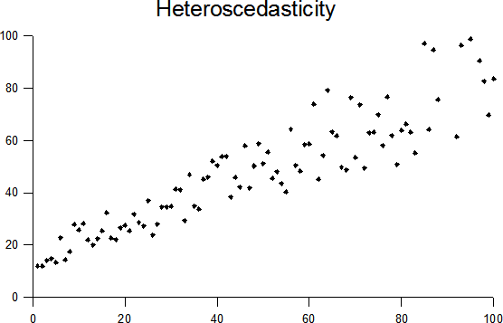

4 Mallioletukset ja virhe
Tilastollisilla malleilla on oletuksia datasi muodosta ja käyttäytymisestä. Näihin oletuksiin on tärkeää vastata, sillä mallin matemaattinen toiminta on todettu vain tilanteissa, jossa oletukset täyttyvät. Jos jokin oletus ei täyty, se voi vaikuttaa hyvin eri tavoin mallin tuloksiin - ja pahimmassa tapauksessa johtaa täysin vääriin tuloksiin.
4.1 Lineaarisen mallin perusoletukset
Kaikki tilastolliset testit joita sovelletaan tällä kurssilla tulevat niin sanotusta lineaaristen mallien perheestä. Tämä yksinkertaisesti tarkoittaa, että ne mallintavat kahden muuttujan välistä suhdetta suorana käyränä, eikä esim. parabolina tai potenssikäyränä.
Lineaarisilla malleilla on kaikilla samat perusoletukset. Näiden lisäksi jokaisella mallilla voi olla omat oletukset tai muokkaukset johonkin perusoletukseen.
Voidaan myös puhua virhelähteistä. Mallioletusten rikkominen on yksi virheen lähde, sillä tämä vaikuttaa mallin lopputuloksiin tavalla, joka ei edusta itse dataa tai mitattua suhdetta.
Kaikille malleille, myös ei-lineaarisille, ensimmäinen ja ehkä tärkein virheen lähde on ääripääarvot tai poikkeavat havainnot.1 Jotta malli toimisi hyvin, ääripääarvoja ei tulisi olla mukana.
1 Tällä hetkellä verkkokirja käyttää sanaa “ääripääarvo”. Käännös on kuitenkin huono, ja aion vaihtaa sen termiin “poikkeavat havainnot” - mutta koska sana löytyy viljeltynä koko kirjan läpi, muutostyössä menee tovi…
Näiden lisäksi lineaarisilla malleilla on seuraavat oletukset: additiviteetti, lineariteetti, normaalijakautuminen, varianssihomogeniteetti sekä riippumattomuus.
4.1.1 Additiviteetti ja lineariteetti
Ensimmäiset oletukset ovat suhteellisen yksinkertaisia, mutta erittäin tärkeitä lineaarisille malleille.
Additiviteetilla tarkoitetaan, että suhde muuttujien välillä tulisi olla summaava. Tämän voi tunnistaa yksinkertaisesti ajattelemalla: riippuvatko muuttujien suhteet toisistaan? Additiviteetti on tärkeintä monimuuttujamalleissa, joissa on useampi kuin yksi selittävä muuttuja, joten sen voi osittain jo olettaa tämän kurssin malleissa. Jos additiviteettia ei kuitenkaan voi taata, tulisi käyttää jotain muuta, kuin lineaarista mallia - emme kuitenkaan käsittele näitä tällä kurssilla.
Lineariteetilla taas tarkoitetaan, että muuttujien välinen suhde tulisi olla selitettävissä suoralla käyrällä. Suhteen ei siis pidä olla parabolinen, eksponentiaalinen tai logaritminen. Tämän tunnistaa helpoiten piirtämällä pistekaavion muuttujista (ks. Alaluku 1.4.5) ja tarkastamalla, asettuvatko pisteet jokseenkin suoralle viivalle. Jos suhde ei ole lineaarinen, lineaariset mallit eivät luonnollisesti kuvasta suhdetta varsin hyvin. Tämän voi korjata linearisoimalla data logaritmilla tai potenssilla (riippuen suhteen muodosta), tai vaihtamalla epälineaarisiin malleihin.
4.1.2 Normaalijakautuminen
Lineaarisissa malleissa jonkun asian tulee olla normaalijakautunut, eli seurata normaalijakaumaa. Tämä ei kuitenkaan tarkoita itse dataa! Mitä tämä tarkoittaa, riippuu aina hieman itse mallista.
Yleisesti katsottuna mittauksen otanta tulisi olla normaalijakautunut. Toisin sanoen, jos saamme tietyn mitan, niin sen todennäköisyys tulisi pystyä määritellä normaalijakauman avulla (ks. Alaluku 3.2).
Suurissa otoksissa normaalijakautuminen oletetaan, kiitos suurten numeroiden lain. Pienissä otoksissa tämä voi kuitenkin osoittautua ongelmaksi. Tällöin käytetään yleensä ei-parametristä testiä, joka ei riipu yhtä lailla tästä oletuksesta.
Monimuuttujamalleissa myös virhemittauksen tulisi olla normaalijakautunut. Koska tämä kurssi ei käsittele monimuuttujamalleja, tästä ei tarvitse kummemmin välittää.
4.1.3 Varianssihomogeniteetti
Varianssihomogeniteetti, myös homoskedastisiteetti, on oikea hirviösana. Sillä tarkoitetaan, että muuttujan varianssi (vaihtelu) tulisi olla sama toisen muuttujan kaikilla kategorioilla. Jos piirrämme pistekaavion kahden muuttujan välisestä suhteesta, vaihtelu yhdellä muuttujalla tulisi siis pysyä jokseenkin samana kaikilla tasoilla toista muuttujaa. Tämän ymmärtää helpoiten kuvassa:


Skedastisuuden tunnistamiseksi löytyy myös tilastollisia testejä, esimerkiksi Levenen testi. Nämä testit ovat kuitenkin laajasti merkitseviä suurissa otoksissa, jolloin niiden käyttökelpoisuus on heikkoa. Siksi on useimmin parempi joko tarkistaa skedastisuuden visuaalisesti (kuten yllä), tai yksinkertaisesti olettaa heteroskedastisuutta.
Jos heteroskedastisuutta esiintyy (eli suhde ei ole varianssihomogeninen), monet kaksimuuttujamitat voivat olla hieman väärässä. Näille löytyy kuitenkin usein robusti versio, tai toinen vaihtoehto. Tarkista aina jokaisen testin kohdalla, mitä tulisi tehdä jos testattava suhteesi on heteroskedastinen!
4.1.4 Riippumattomuus
Riippumattomuus viittaa virhemittausten riippumattomuuten. Toisin sanoen, jokaisen muuttujan virhemittaus (ero suhteen mittariin, esim. korrelaatioon, regressioon tai keskiarvoon) tulisi olla riippumaton kaikista muista. Jos virheiden välillä esiintyy korrelaatiota, riippumattomuuden oletus on rikottu.
Riippumattomuuden rikkominen vaikuttaa eniten merkitsevyystesteihin (keskivirheeseen, ja sitä kautta luottamusväleihin ja p-arvoon).
Riippumattomuuden voit tarkistaa laskemalla kaikki virheet ja korreloimalla ne yhteen. Korrelaatiota ei tulisi esiintyä (suuressa määrin).
Jos virheet eivät ole riippumattomia, sinun tulisi käyttää monitasomallia (engl. multi-level model). Nämä ovat jo haastavia - tilastotieteen käsikirjoissa ne esiintyvät usein viimeisissä luvuissa - joten niitä en suosittele tekemään Excelissä.
4.2 Mallioletusten testaaminen tilastollisesti
Koska oletuksia on paljon ja ne vaikuttavat eri tavoin, alla on kooste niiden testaamisvaihtoehdoista:
Ääripääarvot:
Laske kaikille arvoille z-arvo. Ne arvot, jotka ylittävät \(z = \pm3\) voidaan laskea ääripääarvoiksi.
Laske arvon jakaumalle ylä- ja alakvartiilit, sekä kvartiiliväli \(\text{IQR}\) (alakvartiili - yläkvartiili). Lisää yläkvartiiliin, ja vähennä alakvartiilista, arvo \(1.5 * \text{IQR}\). Ne arvot, jotka jäävät näiden rajojen ulkopuolelle voidaan laskea ääripääarvoiksi.
Additiviteetti ja lineariteetti:
Additiviteetti on looginen väite, joten joudut käyttämään teoriaa ja motivoimaan asiaa.
Lineariteetin voit nähdä pistekaaviosta - näyttääkö muuttujien välinen suhde suoralta käyrältä?
Normaalijakautuminen:
Suurissa otoksissa normaalijakautuminen oletetaan.
Pienissä otoksissa sitä ei voi taata, joten on parempi käyttää ei-parametristä testiä.
Varianssihomogeniteetti:
Helpoin tapa on (taas) tarkistaa pistekaavio - näyttääkö muuttujien välinen suhde suoralta, vai esiintyykö siinä trumpetin tai kolmion muotoa?
Homoskedastisuutta voi myös testata Levenen testillä (ANOVA-malli suhteen virhemittauksella), mutta se on usein merkitsevä suurissa otoksissa.
Toinen vaihtoehto on Hartley’n F-max-testi: Ota suurin löytämäsi varianssi ja jaa se pienimmällä löytämäsi varianssilla. Lopputulos tarkastetaan kriittisen arvon taulukosta. Myös tämä testi on merkitsevyystesti, eli sen merkitsevyys nousee otoskoon myötä, mikä tekee siitä ongelmallisen.
Riippumattomuus:
- Laske molempien muuttujien virheet mitatusta arvosta ja korreloi tulos yhteen. Korrelaation tulisi olla pieni/olematon.